A long time ago, the demons spreading in the world were slain by envoys of the heavens at the end of the Great War. However, these evil souls were able to prolong their existence by possessing lifeforms, and after the passage of time, completed their resurrection. Thus, as a result of the power of the reborn demons, humankind was on its way to its decline... lamenting the condition of humanity, the girls in each sanctuary collectively offered their prayers. The heavens took heed of their prayers and delivered salvation: the girls were granted divine tools in the form of necklaces that hold the power of the envoys of heaven, which embody the will of the gods and that transform into weapons through their prayers. The holy water that is unleashed takes the form of the symbol of salvation and envelops the girls. People have come to fondly call the girls that wield the sacred arms and that exterminate the evil spirits through the miracles of the grace of the heavens "Exosisters". The remaining survivors created organizations centered around the "Exosisters". Treading between life and death, they began their counterattack.
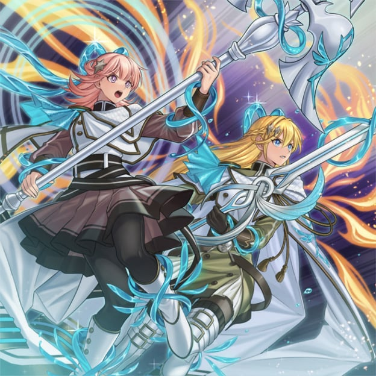
Demons can possess various lifeforms in order to gain a temporary body. There have been sightings of humans being possessed by demons, but it's possible to prevent this by wearing a charm against evil spirits. There are two main ways to exterminate demons: the first one is to recite their true name and extract their souls. The second one is by destroying the possessing soul lying at the very depths of the possessed target through force. Since this second method can prove difficult if the demon is strong enough, it has become imperative to elucidate their true names.
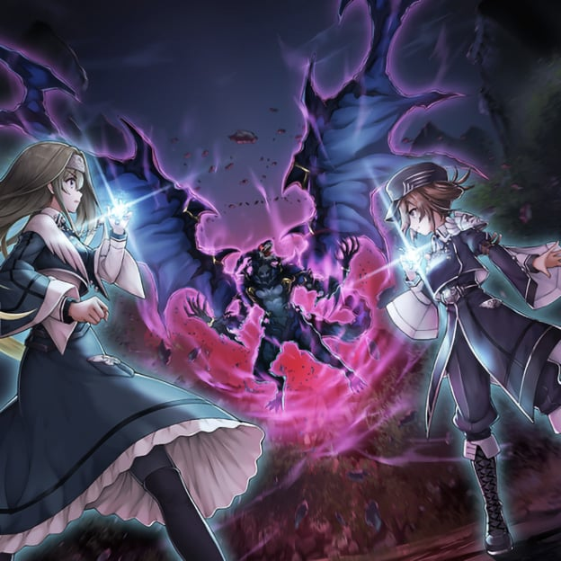
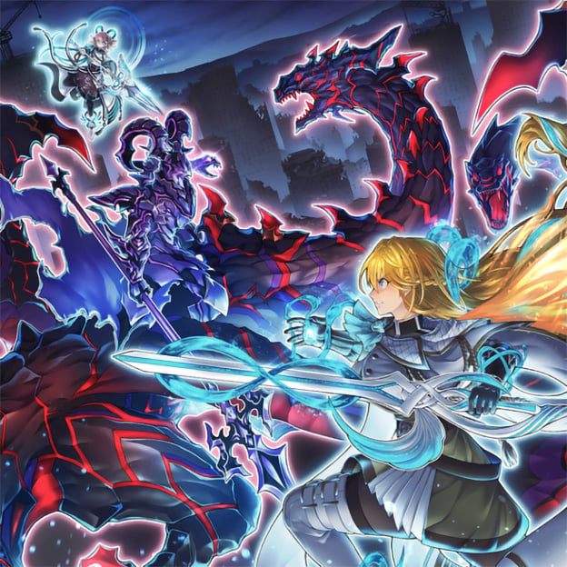
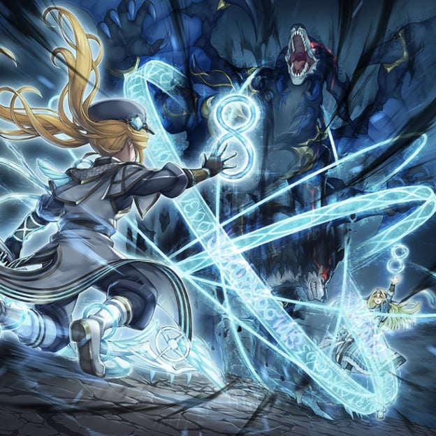
The "Exosisters" have resolved to act in pairs to avoid losing the power of hope, however, in territories where the fight becomes too stern, these pairs form teams. Furthermore, sisters that have exchanged vows of sisterhood are able to unleash a particularly strong power, with sisters "Elis" & "Stella" and sisters "Irene" & "Sophia" being granted power from the superior envoys and forming team 'Lilium', who are assigned to territories where particularly-powerful demons lurk. After the results of countless battles and with the help of the resistance organizations of this territory, they managed to protect people from the hands of the demons, however, the darkness of the lurking demons grows deeper by the hour.
"Exosister Elis" The leader of 'Lilium'. She had an elder sister with whom she exchanged the vows of sisterhood, however her whereabouts became unknown during the midst of a battle.
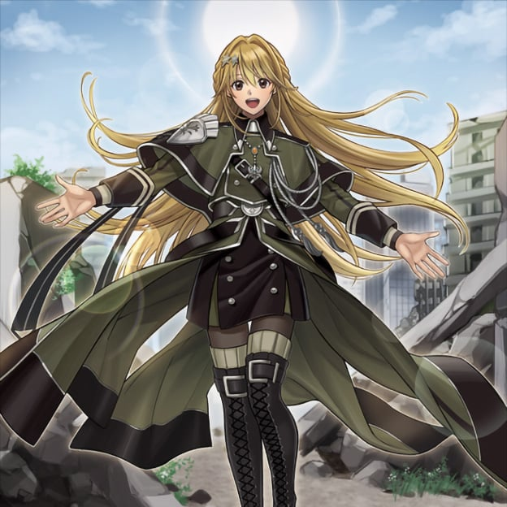
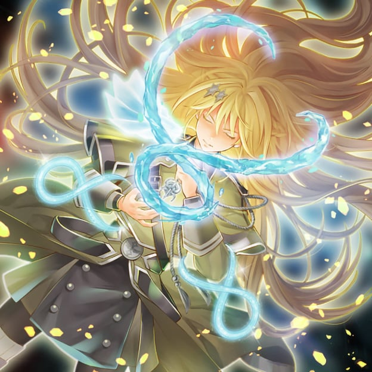
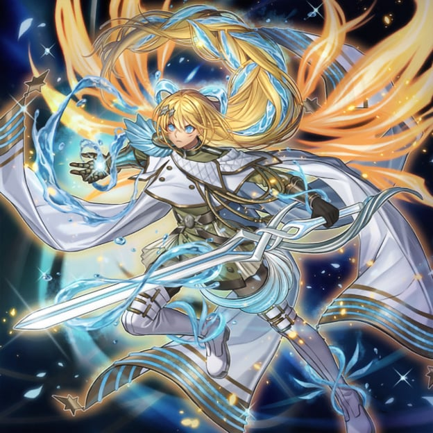
"Exosister Stella" When she wields the power of 'the envoy with the speed of the god that protects the planet of Saturn', her form is called "Kaspitell" and she specializes in high-speed combat.
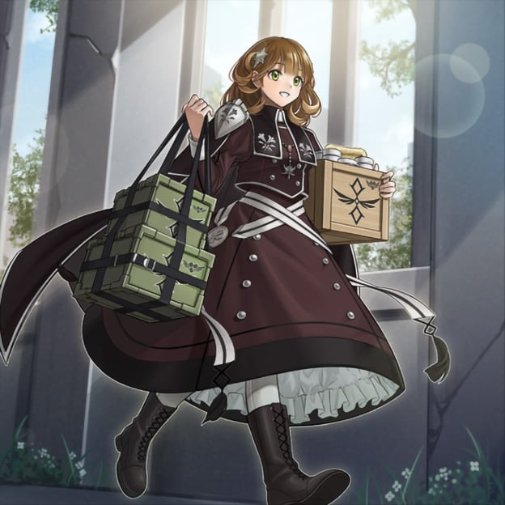
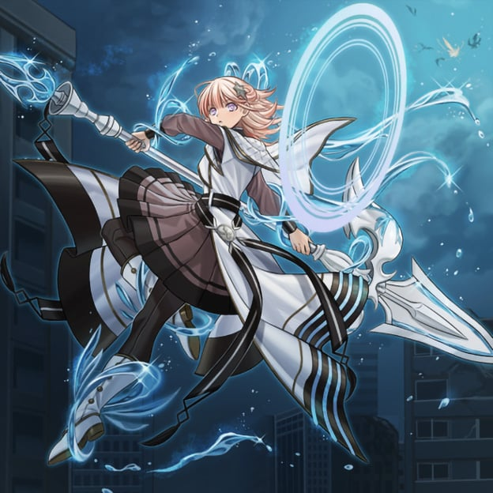
"Exosister Irene" When she wields the power of 'the envoy that conveys the words of the god that protects the Moon', she passes judgment on the demons with holy water bullets under the name of "Gibrine".
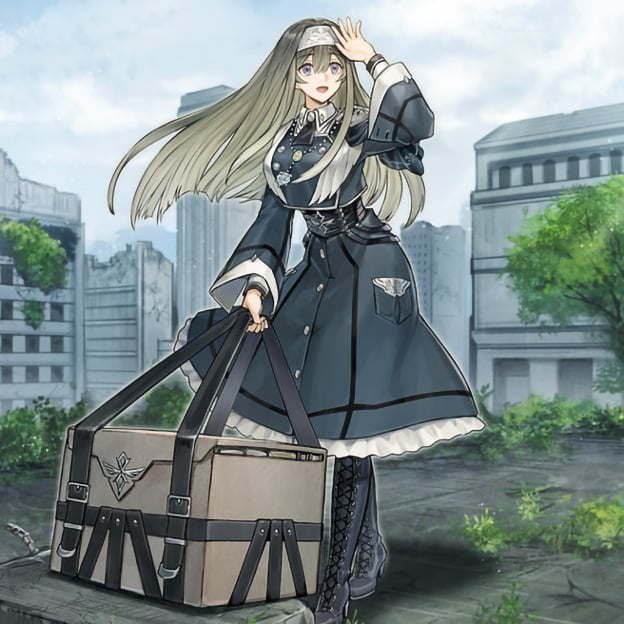
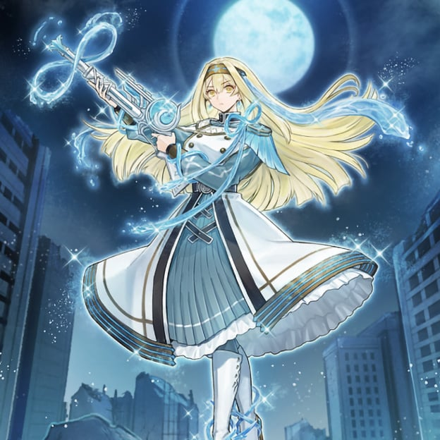
"Exosister Sophia" When she wields the power of 'the envoy that conceals the grace of the god that protects the planet of Venus', she becomes "Asophiel" and takes down enemies with a single, certain shot.
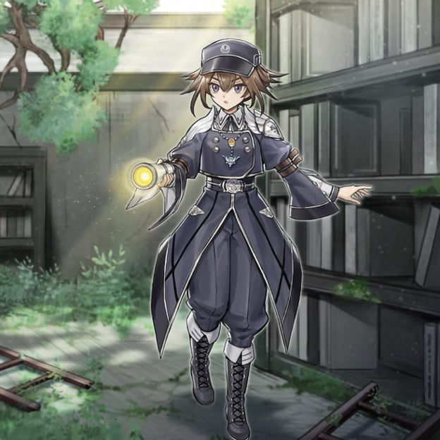
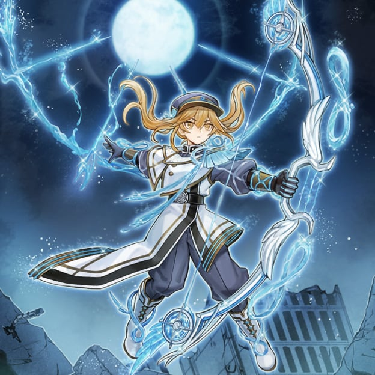
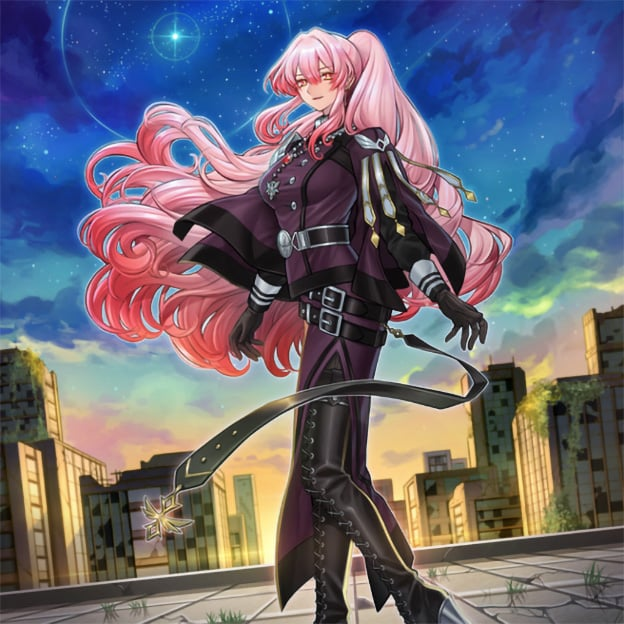
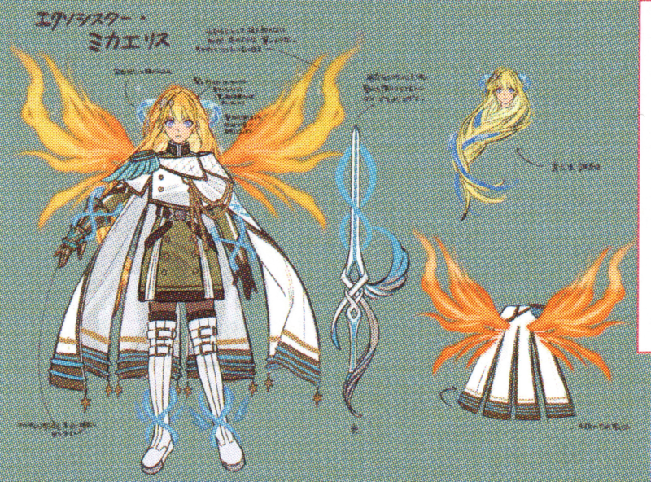
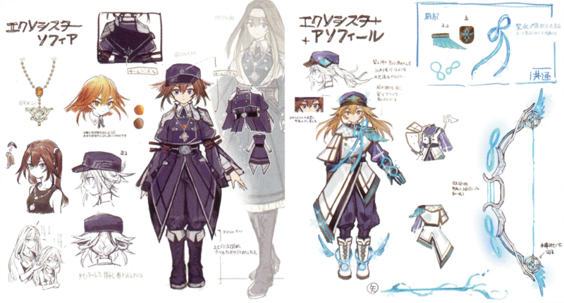